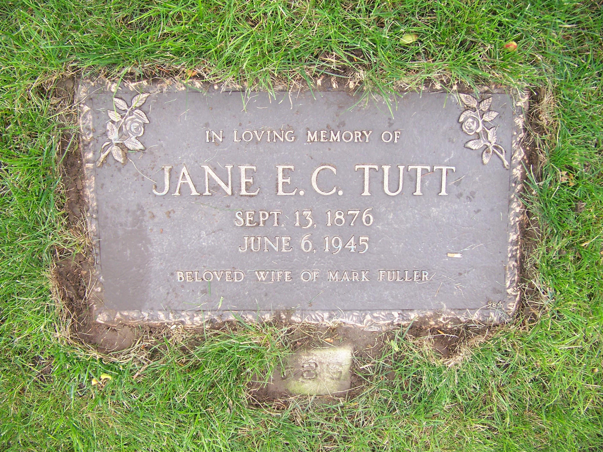

Jane Eliza Caroline Fuller (née Tutt) 1876 - 1945 [ Home ] | [ Calendar ] | [ Surnames Index ] | [ Family History ]A general servant and the daughter of James Tutt (a general labourer) and Jane Foord (a general shop)Jane Tutt , the first cousin twice-removed on the father's side of Nigel Horne , was born in Margate, Kent, England on 13 Sept 18761,2 and married Mark Fuller (a general labourer with whom she had 5 children: Mark Anthony , Kate Rosaline , James Richard Edmund , Charles Thomas and Elizabeth Rebecca ) in St Lawrence, Thanet, Kent, England on 3 Apr 18992 .
Throughout her life, Jane lived in several places: at 18 Clarence Terrace, St Lawrence in Thanet on 3 Apr 18815 , when she was living with her aunt, Jane grandmother, Caroline Bromley; on Clarence Road, St Lawrence in Thanet on 5 Apr 18914 ; on 22 Central Road, Ramsgate, Kent on 2 Apr 19113 - less than a mile from her father James who was living on 7 Hillbrow Road, St Lawrence in Thanet; and on 3 Central Road, Ramsgate, Kent on 19 Jun 19216 .
She died on 4 Jun 1945 at 87 Rose Avenue, Toronto, Ontario, Canada and was buried at Prospect Cemetery, Toronto on 7 Jun 1945 (a drizzly day).
Parents James was born on 16 Jan 1851Jane was born in Jul 1854Children Mark Anthony was born c. Jun 1899Kate Rosaline was born c. May 1900James Richard Edmund was born on 12 Sept 1902Charles Thomas was born on 7 Jan 1905Elizabeth Rebecca was born on 11 Apr 1907Citations England & Wales births 1837-2006 - Findmypast Kent, Canterbury Archdeaconry Marriages - Findmypast 1911 Census for England & Wales - Findmypast (was age 35 and the wife of the head of the household) 1891 England, Wales & Scotland Census - Findmypast (was age 15 and the daughter of the head of the household) 1881 England, Wales & Scotland Census - Findmypast (was age 4 and the daughter of the head of the household) 1921 Census Of England & Wales - Findmypast (was age 45 and the wife of the head of the household) Media Jane Eliza Caroline Tutt - grave  Thanet Advertiser April 8, 1899 England Marriages 1538-1973 - R_848395557/2 England & Wales marriages 1837-2008 - BMD/M/1899/2/AZ/000391/189 England & Wales births 1837-2006 - BMD/B/1876/4/AZ/000561/208 1891 England, Wales & Scotland Census - GBC/1891/0005906042 1911 Census for England & Wales - GBC/1911/RG14/04529/0509/5 1911 Census for England & Wales - GBC/1911/RG14/04529/0509/1 Passenger Lists leaving UK 1890-1960 Image - TNA-BT27-1078-00-0087-P-0005F 1901 England, Wales & Scotland Census - GBC/1901/0007457504 Family Tree Map
Generated by ged2site . Last updated on Feb 19, 2025